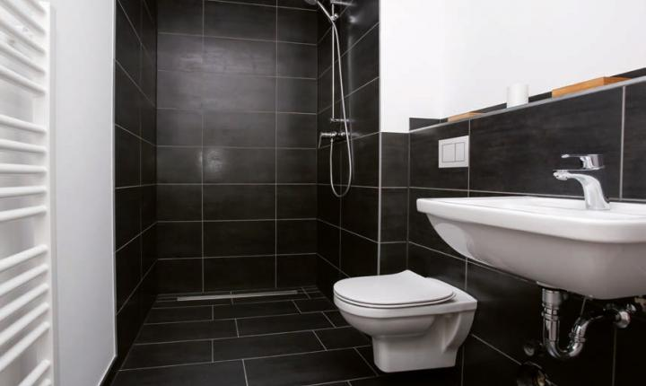
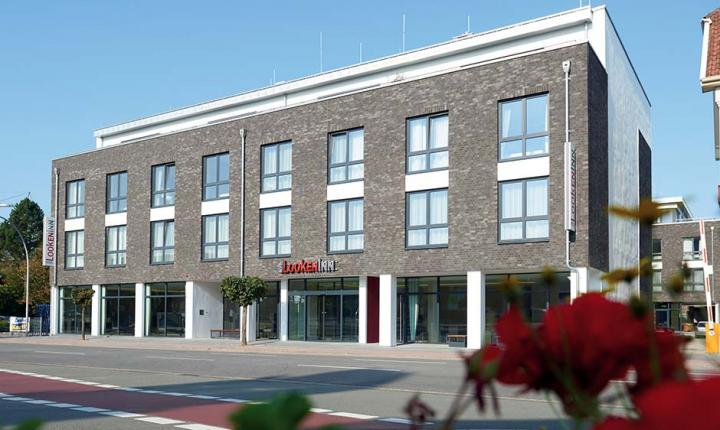

Домашняя страница
Домашняя страница
Проекты
Хорошие проекты
В домах должны быть ванные комнаты. Решения TECE используются по всему миру в районах жилой застройки, в общественных и государственных зданиях и в частных домах.
-
Новый Хоэншенхаузен
Спрос на жилую площадь в Берлине огромный, а территория ограничена. Новое строительство ведется в Хоэншенхаузене, где запланировано 172 жилых дома разной площади. Различающиеся поэтажные планы квартир и ванных комнат усложняют строительство на этих площадках. Для обеспечения быстрого строительства в ванной комнате каждой квартиры были установлены регистры и стенные модули, разработанные для конкретного места и изготовленные промышленным способом. Таким образом, время монтажа сантехнических, отопительных и вентиляционных труб существенно уменьшается, что позволяет сдать объект в запланированные сроки.
Применяемые продукты: TECEsystem, TECEdrainline, TECEplanus urinal, TECEflex
 -
Looken Inn
В городе Линген, земля Нижняя Саксония, построена современная 4-звездная гостиница Looken Inn, в которой к услугам проживающих 104 номера, ресторан и wellness-зона. Все сантехнические работы выполнялись компанией TECE — наряду с изготовленными промышленным способом застенными модулями, панелями смыва для унитазов, системой поверхностного отопления здесь также установлены два жироотделителя. Проектирование ванных комнат для гостей показало потенциал снижения расходов при использовании конструкций, изготовленных промышленным способом.
Применяемые продукты: TECEsystem, TECEnow, TECEsquare, TECEfloor, TECEsepa S
